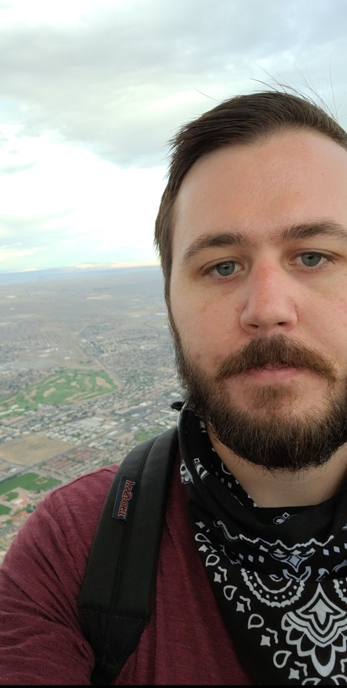
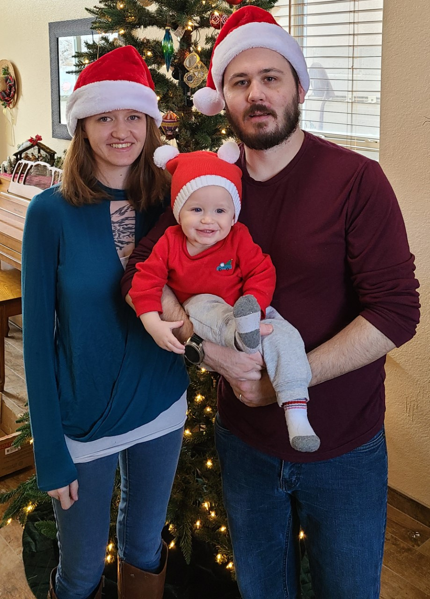

About Kyle
This webpage is about Kyle
My name is Kyle Mayer. 30 years old. Born and raised in Albuquerque, New Mexico. I have many interests from playing various instruments, music production, acrylic painting, and more recently home brewing! I am the happiest when I am learning something new.
My previous career 5 years ago was in the restaurant industry. I was burnt out as a sous chef and needed a career change so I went back to school for computer science. I eventually changed my major to Computer Information Systems Programming concentration and graduated with an associate's Spring of 2020. I am taking this bootcamp to learn more about web development and also for the networking opportunities.
Shown below is a picture of my wife, son, and myself at Christmas. It was my son's first Christmas! He is 1 year old as of January 7th and growing fast! My family is another reason for me taking on the challenge of this bootcamp. I want to be able to support them with a stable career in software development.
